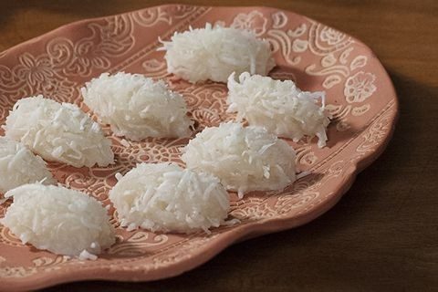
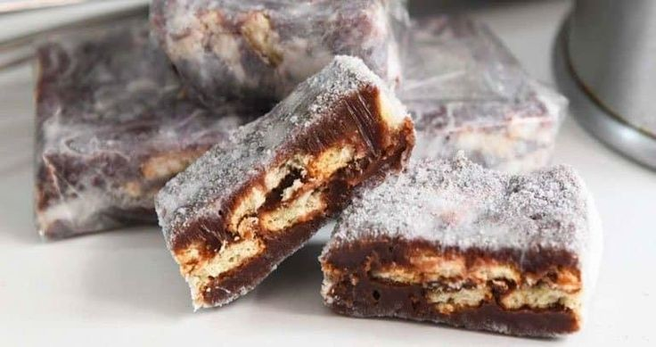
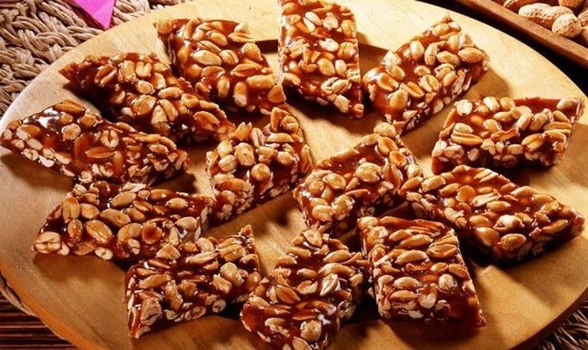
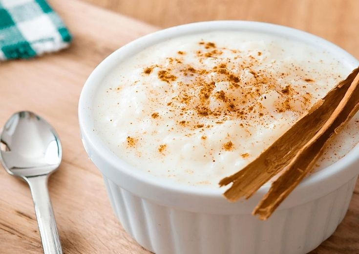
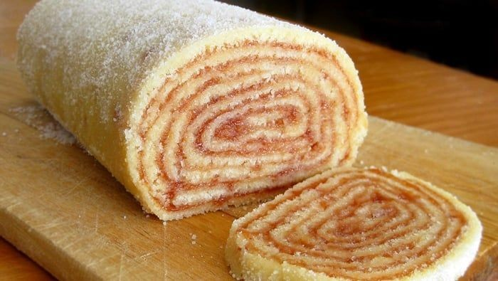
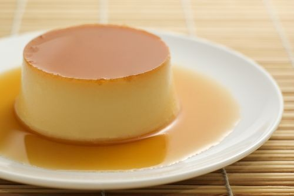
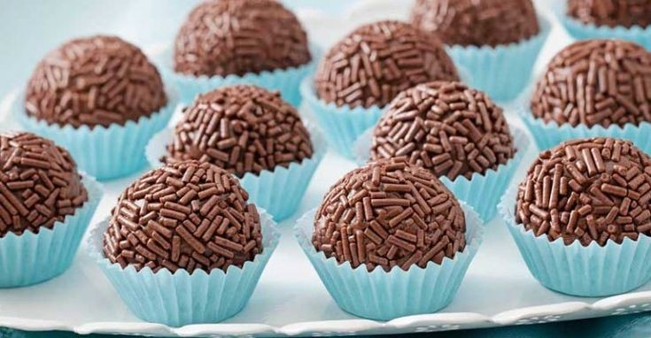

comidas típicas do Brasil
receitas doces
cocada
Ingredientes
Modo de Preparo
Unte uma assadeira grande com óleo. Reserve. Numa panela, dissolva completamente o açúcar na água antes de levar ao fogo. Basta mexer até que o açúcar não esteja mais visível. Leve a panela ao fogo médio e não mexa mais a calda. Quando começar a ferver, passe um pincel com água na borda da panela, para retirar os cristais que se formam e não queimar as bordas. Deixe cozinhar até a calda ficar em ponto de fio médio. (Mergulhe uma colher, levante e verifique se forma um fio). Adicione o coco ralado à panela com a calda e misture bem com uma colher. A seguir, junte o leite condensado e continue mexendo até que a mistura comece a desprender do fundo da panela, como se fosse um brigadeiro. Desligue o fogo. Com uma colher de sopa, distribua colheradas de cocada sobre a assadeira untada. Deixe a cocada esfriar endurecer um pouco. Com a ajuda de uma espátula, retire as cocadas da assadeira e transfira para um prato. Sirva fria. Dica: se quiser outros sabores, basta adicionar na mistura, como maracujá, laranja, doce de leite, etc.
palha italiana
Ingredientes
Modo de Preparo
Pique o biscoito em pedacinhos pequenos e reserve. Com o leite condensado, a margarina e o chocolate em pó, faça um brigadeiro. Assim que o brigadeiro começar a soltar do fundo da panela, misture o biscoito picado até formar uma massa, retire do fogo. Unte uma bancada de mármore, ou alguma superfície lisa, com margarina e despeje essa massa. Abra a massa, batendo com a palma das mãos.Deixe esfriar e corte em quadradinhos.
pé de moleque
Ingredientes
Modo de Preparo
Colocar na panela o amendoim, o açúcar e a margarina. Levar ao fogo, mexendo sempre. Quando começar a formar uma calda, coloque o leite condensado. Mexa bem, até soltar do fundo da panela, como brigadeiro. Coloque no tabuleiro untado com margarina. Deixe esfriar e corte em pedaços. Obs: deixe o tabuleiro untado e a lata de leite condensado aberta, pois é muito rápido e pode passar do ponto.
canjica
Ingredientes
Modo de preparo
Deixe a canjica de molho na água durante a noite. Cozinhe a canjica na água do molho em uma panela por cerca de 1 hora. Quando estiver macia, junte o leite condensado, o leite de coco, o leite de vaca, a canela e o cravo. Cozinhe em fogo baixo por mais uns 15 minutos, ou até engrossar. Coloque mais açúcar se quiser. Sirva quente ou fria.
Bolo de Rolo
Ingredientes
Massa
Recheio
Modo de Preparo
Massa: bata na batedeira a manteiga com o açúcar até formar um creme e coloque as gemas e continue batendo até ficar cremoso. Junte a farinha de trigo e por último as claras em neve. Recheio: leve ao fogo a goiabada com a água e deixe amolecer até ficar como uma geleia mole. Montagem: Coloque de 5 a 6 colheres de sopa da massa espalhado bem finamente em uma forma untada. Leve ao forno pré aquecido em temperatura médica por 5 minutos aproximadamente. Vire o bolo sobre um pano úmido polvilhado com açúcar, passe uma camada bem fina da goiabada e enrole Faça o mesmo procedimento com toda massa. Dá mais ou menos 5 bolos. Por último, polvilhe com açúcar.Paçoca

Ingredientes
Modo de Preparo
Preaqueça o forno à temperatura de 180 graus. Lave os amendoins, seque-os com um papel toalha e deixe-os secar em uma forma por cinco minutos. Depois leve esta forma té o forno por 25 minutos. (Se você comprou o amendoim sem casca, é mais rápido, 15 minutos são suficientes). Se você comprou amendoim com casca, ao tirar do forno, coloque-os em um pote fechado e agite. O atrito fará com que a pele saia. Em um processador ou no liquidificador no modo pulsar, coloque os amendoins, o sal e o açúcar. Processe até ficar uma farofa. Em uma forma grande ou em forminhas especiais para o doce (existem opções redondas e quadradinhas), firme a farofa para que ela fique bem compacta. Espere alguns minutos e desenforme!
pudim
Ingredientes
calda
pudim
Modo de preparo
Calda: Em uma panela de fundo largo, derreta o açúcar até ficar dourado. Junte meia xícara (chá) de água quente e mexa com uma colher de cabo longo. Deixe ferver até dissolver os torrões de açúcar e a calda engrossar. Forre com a calda uma forma com furo central (19 cm de diâmetro) e reserve.
pudim: Em um liquidificador, bata os ingredientes e despeje na forma reservada. Cubra com papel-alumínio e leve ao forno médio (180°C), em banho-maria, por cerca de 1 hora e 30 minutos. Depois de frio, leve para gelar por cerca de 6 horas. Desenforme e sirva a seguir
brigadeiro
Ingredientes
Modo de preparo
Em uma panela funda, acrescente o leite condensado, a margarina e o chocolate em pó.Cozinhe em fogo médio e mexa até que o brigadeiro comece a desgrudar da panela